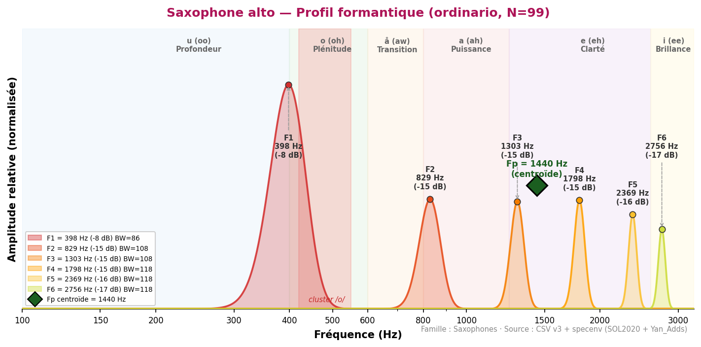

Corpus disponible : saxophone alto uniquement (base SOL2020 IRCAM). Les saxophones soprano, ténor et baryton ne disposent pas de données specenv dans le corpus actuel.
Intérêt acoustique : le saxophone est le seul instrument de l'orchestre à combiner un tuyau conique (comme le basson et le hautbois) avec une anche simple (comme la clarinette). Cette dualité acoustique lui confère un spectre riche et une grande versatilité timbrale.
Position dans le cluster : F1=398 Hz — légèrement en-deçà du cluster /o/ (452–502 Hz) mais très proche. Giesler (1985) place explicitement le saxophone ténor dans le cluster avec Basson, Cor et Trombone. Le saxophone alto est acoustiquement à la frontière de ce groupe.

◆ Fp (centroïde) = 1440 Hz
| Source | F1 (Hz) | F2 (Hz) | F3 (Hz) | F4 (Hz) | Voyelle | N | Accord |
|---|---|---|---|---|---|---|---|
| Giesler (1985) | ~1 000–1 200 | — | — | — | a-ähnlich | — | ~ |
| Backus (1969) | ~1 100 | ~2 200 | — | — | — | — | ~ |
| SOL2020 | 398 ±89 | 1 217 ±312 | 2 355 ±498 | — | o (oh) | 41 | — |
| Technique | N | F1 | F2 | F3 | F4 | F5 | F6 |
|---|---|---|---|---|---|---|---|
| aeolian | 26 | 904 | 1 314 | 1 669 | 1 938 | 2 250 | 2 746 |
| backwards | 31 | 538 | 1 249 | 1 755 | 2 326 | 2 735 | 3 047 |
| bisbigliando | 29 | 431 | 797 | 1 249 | 1 572 | 2 175 | 2 476 |
| blow_without_reed | 1 | 980 | 1 410 | 1 852 | 2 369 | 2 692 | 3 015 |
| chromatic_scale | 2 | 474 | 797 | 1 227 | 1 529 | 2 358 | 2 670 |
| crescendo | 31 | 377 | 851 | 1 324 | 1 733 | 2 003 | 2 562 |
| crescendo_to_decrescendo | 31 | 377 | 743 | 1 174 | 1 550 | 2 121 | 2 595 |
| decrescendo | 31 | 344 | 894 | 1 314 | 1 852 | 2 218 | 2 735 |
| discolored_fingering | 12 | 183 | 474 | 969 | 1 227 | 2 013 | 2 078 |
| double_tonguing | 33 | 355 | 711 | 1 174 | 1 647 | 2 293 | 2 584 |
| exploding_slap_pitched | 3 | 560 | 1 195 | 1 475 | 1 787 | 2 089 | 2 347 |
| flatterzunge | 33 | 398 | 829 | 1 217 | 1 884 | 2 390 | 3 133 |
| flatterzunge_to_ordinario | 33 | 366 | 668 | 1 098 | 1 389 | 2 078 | 2 724 |
| glissando | 30 | 355 | 711 | 1 087 | 1 712 | 2 046 | 2 530 |
| harmonic_fingering | 9 | 484 | 1 270 | 2 013 | 2 282 | 2 638 | 3 208 |
| harmonics_glissando | 1 | 388 | 743 | 1 873 | 2 143 | 2 692 | 3 370 |
| key_click | 12 | 258 | 560 | 915 | 1 292 | 1 680 | 2 282 |
| kiss | 1 | 560 | 1 077 | 1 400 | 1 669 | 2 013 | 2 272 |
| move_bell_from_down_to_up | 6 | 560 | 1 120 | 1 669 | 2 218 | 2 778 | 3 338 |
| move_bell_from_left_to_right | 6 | 549 | 1 120 | 1 669 | 2 218 | 2 767 | 3 327 |
| multiphonics | 47 | 409 | 754 | 1 324 | 1 820 | 2 153 | 2 509 |
| ordinario | 99 | 398 | 829 | 1 303 | 1 798 | 2 369 | 2 756 |
| ordinario_high_register | 42 | 1 389 | 2 358 | 3 510 | 3 758 | 4 167 | 5 006 |
| ordinario_quartertones | 87 | 409 | 851 | 1 324 | 1 970 | 2 422 | 2 821 |
| ordinario_to_flatterzunge | 31 | 355 | 775 | 1 260 | 1 733 | 2 100 | 2 466 |
| play_and_sing_glissando | 2 | 237 | 506 | 1 927 | — | — | — |
| play_and_sing_min_second_up | 3 | 215 | 538 | 894 | 1 249 | 1 820 | 2 067 |
| play_and_sing_unison | 11 | 194 | 463 | 926 | 1 238 | 2 013 | 2 326 |
| sforzato | 31 | 388 | 1 152 | 1 647 | 2 078 | 2 498 | 2 961 |
| slap_pitched | 46 | 334 | 861 | 1 249 | 1 690 | 2 261 | 2 799 |
| slap_unpitched | 3 | 291 | 581 | 926 | 1 238 | 1 744 | 2 089 |
| staccato | 31 | 624 | 1 281 | 1 680 | 2 056 | 2 358 | 2 928 |
| trill_major_second_up | 33 | 377 | 743 | 1 260 | 1 852 | 2 336 | 2 810 |
| trill_minor_second_up | 32 | 474 | 958 | 1 335 | 1 916 | 2 390 | 2 756 |
| Instrument associé | F1 (instrument) | F1 (associé) | Écart | Qualité | Rapport de tessiture | Commentaire |
|---|---|---|---|---|---|---|
| Cor anglais | 398 | 452 | Δ=54 Hz | Excellente | Unisson | Δ=54 Hz — zone /o/ proche, bois graves expressifs |
| Cor | 398 | 388 | Δ=10 Hz | Quasi-parfaite | Unisson | Δ=10 Hz — convergence sax-cor, zone /o/–/å/ |
| Basson | 398 | 495 | Δ=97 Hz | Bonne | Unisson | Zone /o/ partagée — couleur boisée chaude |
| Alto | 398 | 377 | Δ=21 Hz | Quasi-parfaite | Unisson | Δ=21 Hz — sax alto + alto, convergence /o/–/å/ |
| Violoncelle | 398 | 205 | Δ=193 Hz | Bonne | Octave | Sax /o/, violoncelle /u/ — complémentarité |
| Clarinette Sib | 398 | 463 | Δ=65 Hz | Excellente | Unisson | Zone /o/ commune — Δ=65 Hz |
| Instrument | F1 estimé (Giesler) | Zone vocalique | Statut corpus |
|---|---|---|---|
| Saxophone soprano | ~1 200–1 500 Hz | /a/–/e/ | Absent SOL2020 / Yan_Adds |
| Saxophone ténor | 400–600 Hz | /o/ — cluster | Absent SOL2020 / Yan_Adds |
| Saxophone baryton | ~250–400 Hz | /u/–/o/ | Absent SOL2020 / Yan_Adds |
Ces valeurs sont basées sur Giesler (1985) et la littérature acoustique. Leur inclusion dans le corpus constitue une extension future du projet.
Source : formants_all_techniques.csv (SOL2020 IRCAM) · pipeline v22.
Références : Backus (1969) · Giesler (1985) · Meyer (2009).